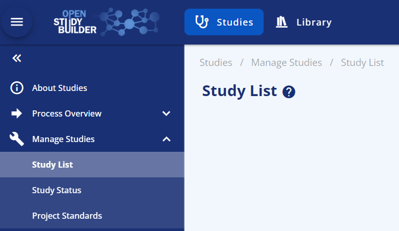
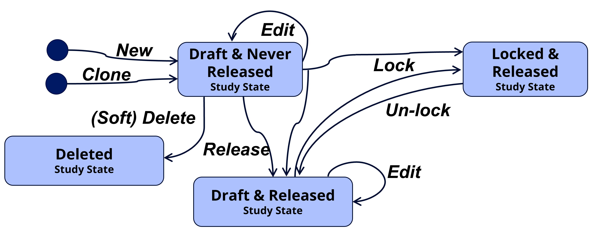

Manage Studies¶
This user guide explain how to manage study definitions in the StudyBuilder application. This is done on the Studies menu selecting Manage Studies.

- On the Study List sub menu you can search and select studies as well as add new study definitions.
- On the Study sub menu you can maintain the core attributes for a study, study status and versioning, maintain relationship to sub-parts for (for protocols holding multiple sub-studies)* and maintain relationship between study versions and protocol document versions*.
- On the Project Standards sub menu you link your study to selected project and thearuputic area standards*.
Note, items marked by * are not implemented yet.
Search and Select Study¶
You can select a study both in the SELECT STUDY in the top banner as well as on the menu Manage Studies --> Study List. On the Study List menu you also have column filtering options and the possibility to add new studies.
Delete Study¶
You can delete a Study from the menu Manage Studies --> Study. A prerequsite is that the study have not previously been Locked.
This is a 'soft' deletion, when the study is deleted it will no longer be part of the study list and identifiers will no longer be part of constarint chekcs. The deleted studies will then be available on the menu Manage Studies --> Study List on the tab Deleted Studies.
Maintain Core Study Attributes¶
You can maintain the core attributes for a study from the menu Manage Studies --> Study on the tab Study Core Attributes.
This cover the relationship to clinical programme and project, study number (will be linked to the Study ID) and the Study Acronym.
Note the History displayed from this page is actually the overall history for the study definition.
Maintain Study Status and Versioning¶
This section will explain how we work with versioning, status, state, and instances in OpenStudyBuilder.
Study State refer to the state a study is in. The study definition data can be referenced in specific versioned study definition instances as well as general references to those. A study definition instance has a specific status. All these terms will be described in this guide.
A study definition can at a point in time be in one of the following states:
- Draft and Never Released, the study definition can be edited, deleted, released into minor version, or locked into major version. No persistent study definition instances exist yet.
- Draft and Released, the study definition can be edited, released into minor version or locked into major version. Persistent study definition instances do exist.
- Locked and Released, the study definition cannot be edited, it can be unlocked into draft.
- Deleted, the study definition is deleted and can no longer be edited. Attribute values will no longer be part of uniqueness checks. The deletion is a soft deletion, audit trail still exists, and deleted studies can be listed on a dedicated tab for deleted studies so audit trail can be displayed.
This is all controlled by several actions, bringing the study into different states - illustrated in below state-action diagram and described in the following section.

| Action | Description |
|---|---|
| New (Add) | A study is created from scratch or as a clone from an existing study. This will bring the study into the state "Draft and Never Released". |
| Edit | A study can be edited when the study status is in Draft. The editing will not change the state, it will continue to be either "Draft and Never Released" or "Draft and Released". |
| Release | This will create a stable persistent study instance that can be referred to for downstream usage, as a data snapshot reference in the repository. A concurrent minor version number will automatically be assigned (0.1, 0.2, ..., 1.1, 1.2, ...). The study will continue to be in 'Draft' status but will change state from "Draft and Never Released" to "Draft and Released". Release is like check-in in a document management system or a commit and push in a Git repository. |
| Delete | Study can only be deleted if never locked. When the study is deleted, it will be removed from the list of studies and not take part in e.g., uniqueness checks. But technically it is a soft delete, and the study and audit trail can be seen from the tab listing deleted studies. |
| Lock | This will create a versioned stable persistent study instance that can be referred to from downstream usage, as a data snapshot reference in the repository. The study will change status to 'Locked' and can no longer be edited. To continue to edit, an un-lock action must be done starting up a new version. Vision is to add a related study milestone (e.g., 'Final protocol') and a set of metadata rules and consistency checks must then be fulfilled to lock the study for a specific study milestone. This is however not yet implemented and initially the simple rule we have defined is a study number must be assigned and a study title defined. A concurrent major version number will automatically be assigned (1.0, 2.0, 3.0, ...). The locking process will also make a study release instance to ensure the latest release instance never is older than the latest locked instance. Lock and Release is like creating a final approved version in a document management system or a merging a pull request into main in a Git repository. |
| Un-lock | This will bring the study back into the 'Draft' status where the study again can be edited. As the study always will implicitly be Released when Locked this will bring the study to the "Draft and Released" state. |
This enables several study definitions instances that can be used for querying study definitions data from OpenStudyBuilder. A study definition instance can have the following status:
- Draft, refer to the current instance that can be edited.
- Released, refer to a minor version of a stable instance (snapshot) for downstream testing and review.
- Locked, refer to a major version of a stable instance (snapshot) for downstream usage in final deliverables. As this is a major version several constraint checks must be fulfilled for a study definition instance can be locked. Both a locked version instance and a released instance is made when the study is locked to avoid the latest released is older than the latest locked.
Some of these study definition instances are general, and some refer to the specific released minor versions or locked major versions of a study definition instance. Each are described in the following table.
| Study Definition Instance | Description |
|---|---|
| Latest | Refer to the latest study definition instance in status Draft when the study is in Draft or the latest Locked instance when the study is Locked. This is used by the OpenStudyBuilder as the default study definition instance when displaying study data. |
| Draft | Refer to the current draft study definition instance when the study is in Draft (i.e. it does not exist when the study state is Locked and Released). Note this study instance is not persistent and will change whenever updates are being made to a study definition. |
| Latest Released | Refer to the latest released study instance. |
| Released sub-version | Refer to a specific released study definition instance done at a specific point in time and assigned a sub version number |
| Latest Locked | Refer to the latest locked study definition instance. |
| Locked version | Refer to a specific locked study definition instance done at a specific point in time and assigned a main version number. |
These study definition instances should be used in different ways. For final deliverables (like a final protocol version) a locked version should always be used. For testing e.g., SDTM generation a stable released study definition instance can be used. The benefit here is it is stable so will not have instance changes as the study definition is being updated, this makes it simpler to test and debug the programs using the metadata.
For general queries and exploration of study definitions metadata the general lates study definition instance should be used, where you always see the lates metadata independent of status.